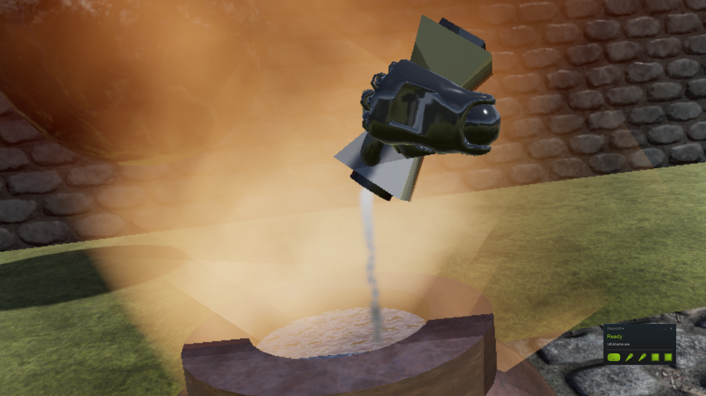

Gallery


The cognitive sciences (psychology, neuroscience, linguistics, and others) rely on behavioral experiments to understand the nature of the mind and brain. A great many of these experiments make use of narrow, artificial stimulus-response paradigms, limiting the effectiveness of the scientific conclusions. With the advent of inexpensive, high-quality virtual reality systems, there is now an opportunity to develop experiments with ecologically valid (i.e. natural) environments and rich interactions, to better understand real cognitive processes in the wild.
We are a small group of cognitive neuroscientists building virtual reality experiments using Unreal Engine. The goal of our project is to expand the accessibility and replicability of behavioral research in VR by building an open-source toolkit as an add-on for Unreal Engine 4. We strongly believe that wider adoption of VR experimental methods in cognitive and behavioral sciences will push the frontiers of scientific knowledge forward and therefore we hope to ease the adoption of this approach by providing standardized, extensible, and simple tools to solve common challenges.